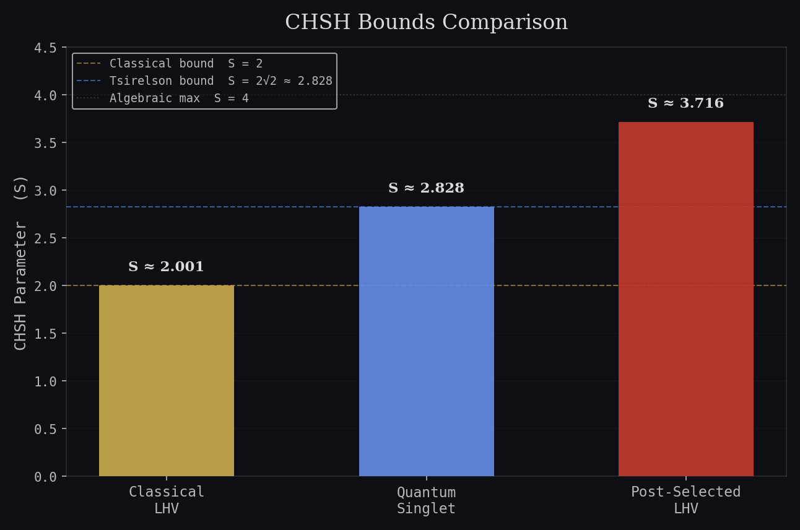
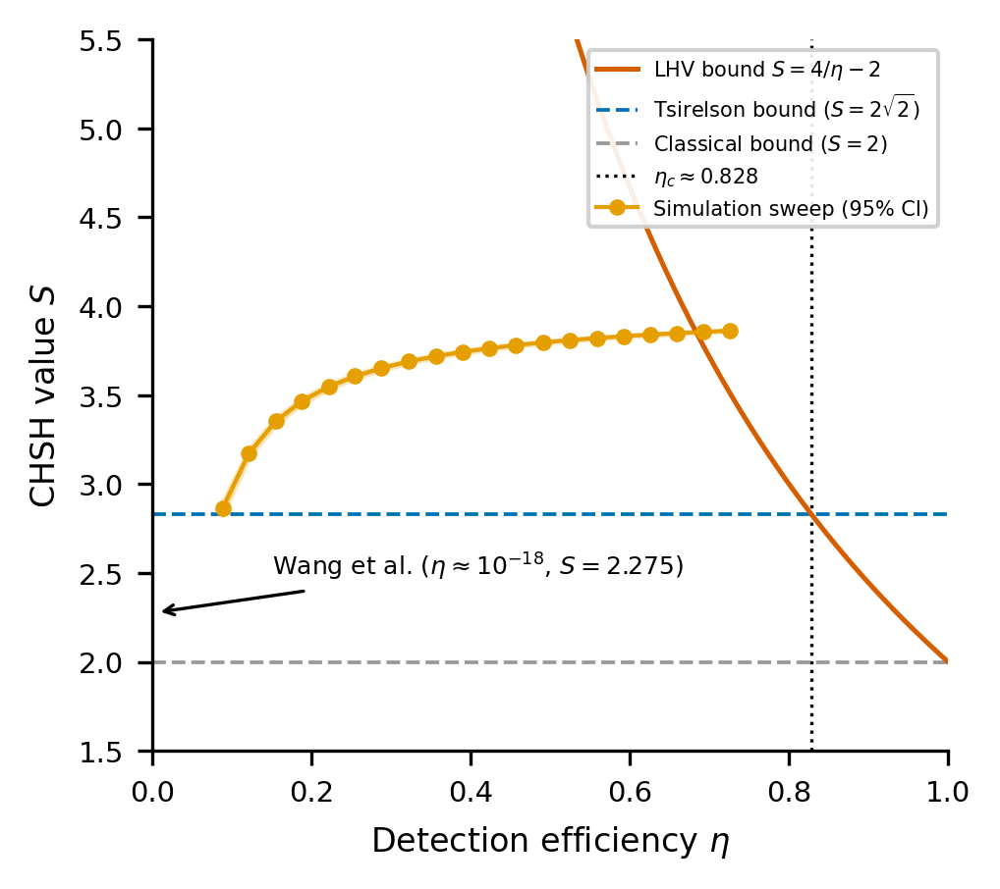
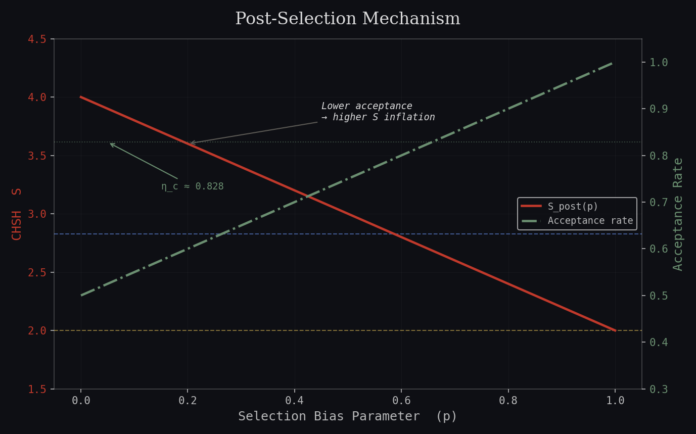

Formal Paper
Bell Violations Without Entanglement?
A Reproducible Rebuttal of Wang et al. (2025)
Claim: in the ultra-low-efficiency regime, a post-selected CHSH value above 2 is non-exclusionary evidence until the selection rule itself is constrained.
- The paper-grade Monte Carlo artifact remains S = 3.716 (95% CI [3.714, 3.717]) at 70.0% acceptance for a purely local source.
- The selected estimator is a conditional expectation on accepted events, so the naive S ≤ 2 inference survives only under fair-sampling assumptions.
- At Wang et al.’s reported efficiency of ~10−18, diagnostic structure matters more than rhetorical velocity.
Abstract
A recent Science Advances paper reports S = 2.275 ± 0.057 at an effective detection efficiency of roughly 10−18 and interprets that statistic as Bell-inequality violation without entanglement [12]. The present paper makes a narrower claim. In such a severely filtered regime, the scalar fact S > 2 is not exclusionary evidence against local models unless the selection mechanism is independently constrained. We formalize this point in three steps. First, we write the selected estimator as a conditional expectation on accepted events and identify fair sampling as the assumption that transfers the classical CHSH bound from the emitted ensemble to the retained one. Second, we construct a deterministic local hidden-variable model with an outcome-coupled acceptance rule and derive the exact toy-model expectations Esel = ±13/14 and Ssel = 26/7 ≈ 3.714. Third, we compare those exact expectations with the site’s paper-grade Monte Carlo artifact, which yields S = 3.716 (95% CI [3.714, 3.717]) at 70.0% acceptance, and with the Wang et al. report. The evidentiary consequence is limited but decisive: in an ultra-low-efficiency Bell test, a post-selected CHSH value above 2 is suggestive at most until raw correlations, setting-resolved acceptance rates, and fair-sampling diagnostics are reported.
Introduction
Bell’s theorem excludes local hidden-variable explanations for the full set of quantum correlations under the usual assumptions of locality, realism, and setting independence [1]. The Clauser-Horne-Shimony-Holt inequality packages that exclusion into an experimentally testable scalar, and Fine sharpened the probabilistic picture by relating CHSH satisfaction to the existence of a joint distribution over the counterfactual outcomes [2] [13].
In the fair-sampling regime, the local bound is S ≤ 2 and the quantum ceiling is the Tsirelson bound 2√2 [5]. Wang et al. report a super-classical value from a multiphoton interference experiment and interpret it as Bell-inequality violation without entanglement [12].
The question here is therefore not whether the apparatus is sophisticated. It plainly is. The question is whether a post-selected statistic in an ultra-low-efficiency regime can carry the inferential weight being assigned to it.
This paper answers that question with a constructive counterexample and a narrower standard of evidence. A large CHSH number can be impressive; impressiveness is not, by itself, a loophole closure criterion.
Theoretical Background
Notation and Assumptions
We write Alice’s setting as x ∈ {0,1} and Bob’s as y ∈ {0,1}. Outcomes are binary: Ax, By ∈ {-1,+1}. A hidden variable is denoted by λ, and D ∈ {0,1} marks whether a trial is retained by the analysis filter.
Locality
Ax(λ) depends on x and λ, not on y; symmetrically for Bob.
Realism
All four counterfactual outcomes are taken to exist simultaneously for the local model under study.
Freedom
P(λ|x,y) = P(λ), so the settings are statistically independent of the hidden variable.
Fair Sampling
The standard CHSH inference on selected data additionally requires D not to depend on the hidden outcome pattern in a biasing way.
Definition
CHSH Functional and Sign Convention
In the convention used throughout this paper, the CHSH functional is
Relabeling settings or flipping one party’s output signs maps this expression to the other familiar CHSH sign placements without changing the attainable classical or quantum bounds. The notation changes; the admissible region does not.
Proposition 1
Fair-Sampling Local Bound
For any local hidden-variable model satisfying locality, realism, freedom, and fair sampling, the selected CHSH statistic obeys
Proof Sketch
For each fixed λ, define X(λ) = A0(λ)[B0(λ) + B1(λ)] + A1(λ)[B0(λ) - B1(λ)]. Because Bob’s outcomes are each ±1, exactly one bracket has magnitude 2 and the other vanishes, so |X(λ)| ≤ 2. Integrating over λ preserves the bound. If the accepted sample is a fair image of the emitted ensemble, the same algebra applies to the retained data as well [1] [2] [13].
Proposition 2
Quantum Comparison Ceiling
Within quantum mechanics, the maximal CHSH value is the Tsirelson bound
Proof Sketch
Let A, A' and B, B' be Hermitian observables with eigenvalues ±1, and define the CHSH operator Ŝ = A ⊗ (B + B') + A' ⊗ (B - B'). The standard commutator calculation gives Ŝ2 = 4I + [A,A'] ⊗ [B,B'], from which ||Ŝ2|| ≤ 8 and therefore ||Ŝ|| ≤ 2√2. That ceiling is achievable for suitable entangled states and local observables [5].

Proposition 3
Selection Replaces the Unconditional Estimator
Once analysis is conditioned on accepted trials, the operational correlation is not Exy but
Proof Sketch
The indicator D selects a conditional ensemble. If D is independent of the hidden outcome pattern given the settings, then the selected estimator agrees with the raw one and the usual CHSH reasoning transfers. If D depends on outcomes or on a setting-outcome interaction, the estimator has changed, and the unqualified inference from S > 2 to nonlocality has changed with it [3] [14] [16].
That conditionalization issue is the detection loophole in statistical clothing. Pearle, Clauser-Horne, Garg-Mermin, Eberhard, and later reviews all stress that low-efficiency Bell tests need more than a selected scalar summary [3] [7] [14] [15] [16]. A useful CHSH benchmark for post-selected local models is
which we use throughout this paper as the working efficiency benchmark. Appendix A states the scope caveat explicitly: the expression is informative for CHSH-style post-selected analysis, not a universal replacement for every loophole discussion ever written.

Proposition 4
Constructive Inflation by Outcome-Coupled Acceptance
Let d00 = d01 = d10 = +1 and d11 = -1. If a trial with setting pair (x,y) is kept with probability phi when AxBy = dxy and with probability plo otherwise, then
For the deterministic model used here, the raw correlations are E00 = E01 = E10 = 1/2 and E11 = -1/2. Setting phi = 0.9 and plo = 0.1 yields the exact toy-model expectations Exy(sel) = dxy 13/14 and therefore Ssel = 26/7 ≈ 3.714.
Proof Sketch
Write qxy = P(AxBy = dxy | x,y). Then qxy = (1 + dxyExy)/2, the acceptance rate is ηxy = phiqxy + plo(1 - qxy), and the selected correlation is dxy[phiqxy - plo(1 - qxy)] / ηxy. Appendix B expands the algebra. The important structural fact is plain: once the filter rewards the sign pattern that maximizes the CHSH combination, the statistic follows the filter.
Methods
Deterministic Local Source
The paper-grade artifact uses the reference-model workflow from the companion simulator repository. A hidden variable λ is drawn uniformly on [0, 2π), and the outcomes are deterministic thresholded cosines:
The chosen CHSH settings are (a0, a1, b0, b1) = (0, π/2, π/4, -π/4). For this deterministic sign model, those angles give the exact raw expectations
The Monte Carlo therefore verifies a simple local baseline rather than searching for one. That is a feature, not a concession.
Outcome-Coupled Acceptance Rule
The filter uses the sign pattern that maximizes the chosen CHSH combination: d00 = d01 = d10 = +1 and d11 = -1. For each trial, define an acceptance indicator D by
with phi = 0.9 and plo = 0.1. The filter is local in the sense that it is applied after outcomes have been generated from a local source, but it is not fair: it depends directly on the outcome pattern and indirectly on the setting pair through dxy.
| Parameter | Value | Role |
|---|---|---|
| Hidden variable | λ ~ Unif[0, 2π) | Provides an isotropic local source with deterministic outcomes. |
| CHSH settings | (0, π/2, π/4, -π/4) | Produces the exact raw sign pattern (+1/2,+1/2,+1/2,-1/2). |
| Runs | 20 independent runs | Supports a run-level confidence interval for the aggregate Monte Carlo result. |
| Trials per run | 50,000 | Samples settings uniformly across the four CHSH pairs. |
| Selection parameters | phi = 0.9, plo = 0.1 | Rewards the CHSH-favored sign pattern and penalizes its complement. |
| Interval estimate | 95% t-interval over runs | Summarizes Monte Carlo variability of the aggregate artifact row. |
Reproducibility Protocol
- Sample a setting pair (x,y) uniformly from the four CHSH combinations.
- Sample λ uniformly on [0,2π) and compute Ax(λ), By(λ).
- Record the raw product AxBy and the target sign dxy.
- Accept the trial with probability phi when AxBy = dxy, else with probability plo.
- Estimate both raw and selected correlations by setting pair, then assemble the CHSH statistic from those four entries.
- Repeat for 20 runs and report the mean, run-level spread, and 95% t-interval.
Results
Aggregate Monte Carlo Result
The paper-grade rebuttal keeps the project’s published aggregate row: without post-selection the local model remains at S = 2.001 (95% CI [1.998, 2.004]) with 100% acceptance, while the same source under outcome-coupled acceptance yields S = 3.716 (95% CI [3.714, 3.717]) at 70.0% acceptance. The evidentiary point is not that the artifact is larger than Wang et al.’s value. It is that a local filter reaches the same class of evidence being interpreted as nonlocal.
| Dataset | CHSH S | Acceptance / Efficiency | Interpretation |
|---|---|---|---|
| Classical model, no selection | 2.001 ± 0.009 | 100% | Respects the local CHSH bound, as a fair local sample should. |
| Classical model, post-selected | 3.716 ± 0.004 | 70.0% | Selection artifact exceeds both the classical and Tsirelson bounds. |
| Wang et al. (2025) | 2.275 ± 0.057 | ~10−18 | Lives deep inside a regime where local post-selection remains available. |
Setting-Pair Decomposition of the Toy Filter
The analytic toy model makes the inflation mechanism numerically transparent. Starting from the exact raw correlations (+1/2,+1/2,+1/2,-1/2), the acceptance rule with phi = 0.9 and plo = 0.1 yields the exact selected correlations (±13/14) and a uniform pairwise acceptance rate of 0.7.
| Setting pair | Favored sign dxy | Raw Exy | Selected Exy(sel) | Acceptance ηxy |
|---|---|---|---|---|
| (a,b) | +1 | 1/2 = 0.500 | 13/14 = 0.929 | 7/10 = 0.700 |
| (a,b') | +1 | 1/2 = 0.500 | 13/14 = 0.929 | 7/10 = 0.700 |
| (a',b) | +1 | 1/2 = 0.500 | 13/14 = 0.929 | 7/10 = 0.700 |
| (a',b') | -1 | -1/2 = -0.500 | -13/14 = -0.929 | 7/10 = 0.700 |
Summing the exact selected entries gives Ssel = 13/14 + 13/14 + 13/14 - (-13/14) = 26/7 ≈ 3.714, which is fully consistent with the Monte Carlo artifact row. In other words, the analytic toy filter and the numerical rebuttal are telling the same story in different dialects.

Why Wang et al. Remain Non-Diagnostic Here
Wang et al. report a smaller value than the artifact above, but that comparison is incidental. The decisive fact is that once the accepted sample is permitted to drift away from the emitted ensemble, local models can already populate the reported regime. At η ≈ 10−18, the working CHSH benchmark SLHV,bench(η) = 4/η - 2 is astronomically above 2.275. In that setting, a super-classical selected value is not yet a proof of nonlocality; it is a prompt to inspect the conditioning.
Discussion
What the Model Proves
The constructive result is limited but sharp. A deterministic local source, paired with an outcome-coupled acceptance rule, can generate a selected CHSH value above 2 and above the Tsirelson bound. Therefore a selected scalar by itself does not certify nonlocality in a regime where such filters remain experimentally admissible. The logic is conditional, but the condition is exactly the one that matters here.
What the Model Does Not Prove
It does not prove that Wang et al.’s apparatus is classical. It does not deny that a quantum description of the apparatus may be appropriate. It does not claim that 4/η - 2 is the last word on every Bell inequality or every experimental design. What it does say is simpler: the reported evidence does not yet force the nonlocal interpretation.
What Would Weaken This Rebuttal
The rebuttal would lose force if Wang et al. supplied diagnostics that make the relevant local-selection mechanism implausible. In practical terms, that means setting-pair-resolved acceptance rates, raw pre-selection correlations, no-signaling checks on both raw and selected data, and explicit tests showing that acceptance is not correlated with the hidden outcome structure or with the measurement context. If the selected sample can be shown to be fair, this paper’s central objection recedes accordingly.
The benchmark for persuasive Bell evidence is set by the loophole-free tests of 2015, which paired suitable efficiencies with locality protections and aggressive diagnostics rather than relying on a single post-selected number [9] [10] [11].
| Diagnostic | Why it matters |
|---|---|
| Raw correlations before selection | Shows whether the effect exists prior to the filtering step. |
| Acceptance rate by setting pair | Tests whether retention is coupled to measurement context. |
| No-signaling checks on raw and selected data | Detects filter-induced distortions in the observed marginals. |
| Independence tests for acceptance vs. outcomes/settings | Directly probes the fair-sampling assumption instead of merely hoping for it. |
| Sensitivity analysis for plausible filter bias | Quantifies how much apparent violation could be manufactured by asymmetric retention. |
Inference Discipline
A Bell test is an inference pipeline, not a single scalar. When efficiency is so low that the accepted sample may be almost all one has, the burden shifts from celebrating a boundary crossing to demonstrating that the boundary was crossed by physics rather than by conditioning. Nature may be subtle; statistics, when conditioned hard enough, are merely obedient.
Conclusion
The conclusion is narrower than a manifesto and stronger than a complaint. A local hidden-variable source with outcome-coupled acceptance reproduces the evidentiary regime of a post-selected Bell claim and can exceed the Tsirelson bound without entanglement. The Wang et al. statistic, considered as a selected CHSH number at ultra-low effective efficiency, therefore does not by itself establish quantum nonlocality.
The remedy is methodological rather than theatrical: report the raw correlations, the setting-resolved acceptance structure, and the diagnostics that constrain fair sampling. Until then, the correct interpretation of a low-efficiency post-selected violation is caution, not coronation.
Appendix
Appendix A. Detection Benchmark and Threshold
The working benchmark used in this paper is
Setting that benchmark equal to the quantum ceiling yields the familiar CHSH threshold:
This threshold is the standard reference point for CHSH-style fair-sampling discussions, consistent with the Pearle, Clauser-Horne, Garg-Mermin, and Eberhard literature [3] [7] [14] [15]. It is not universal across every Bell inequality variant: Clauser-Horne and Eberhard-type analyses can shift the efficiency discussion, especially for non-maximally entangled states. The benchmark is used here because Wang et al. frame their claim as a CHSH-style Bell violation.
Appendix B. Derivation of the Toy Post-Selection Estimator
Fix a setting pair (x,y) and favored sign dxy ∈ {-1,+1}. Let qxy = P(AxBy = dxy | x,y). Then
because Exy = P(AB=+1|x,y) - P(AB=-1|x,y). Under the acceptance rule phi for favored outcomes and plo otherwise, the pairwise acceptance rate is
and the selected correlation is
Substituting the exact raw values E00 = E01 = E10 = 1/2, E11 = -1/2, and (phi,plo) = (0.9,0.1) gives
Hence Ssel = 26/7 ≈ 3.714. The stronger moral is structural: whenever the filter rewards the sign pattern aligned with the chosen CHSH combination, the statistic inherits the filter’s preferences.
Appendix C. Sign Conventions and Notation Glossary
| Symbol | Meaning |
|---|---|
| x,y | Alice/Bob setting labels in {0,1}. |
| Ax, By | Binary outcomes taking values ±1. |
| λ | Hidden variable sampled from a uniform local source. |
| D | Acceptance indicator for whether a trial is retained. |
| Exy | Raw correlation E[AxBy|x,y]. |
| Exy(sel) | Selected correlation conditioned on D = 1. |
| dxy | Favored product sign for the CHSH-maximizing filter. |
| S = |E00 + E01 + E10 - E11| | The CHSH sign convention used throughout; other conventions are equivalent up to relabeling. |
References
- Bell, J.S. (1964). On the Einstein-Podolsky-Rosen paradox. Physics, 1(3), 195–200. DOI
- Clauser, J.F., Horne, M.A., Shimony, A., & Holt, R.A. (1969). Proposed experiment to test local hidden-variable theories. Physical Review Letters, 23(15), 880–884. DOI
- Pearle, P.M. (1970). Hidden-variable example based upon data rejection. Physical Review D, 2(8), 1418–1425. DOI
- Freedman, S.J., & Clauser, J.F. (1972). Experimental test of local hidden-variable theories. Physical Review Letters, 28(14), 938–941. DOI
- Tsirelson, B.S. (1980). Quantum generalizations of Bell’s inequality. Letters in Mathematical Physics, 4, 93–98. DOI
- Aspect, A., Grangier, P., & Roger, G. (1982). Experimental realization of EPR-Bohm Gedankenexperiment. Physical Review Letters, 49(2), 91–94. DOI
- Eberhard, P.H. (1993). Background level and counter efficiencies required for a loophole-free EPR experiment. Physical Review A, 47(2), R747. DOI
- Weihs, G. et al. (1998). Violation of Bell’s inequality under strict Einstein locality conditions. Physical Review Letters, 81(23), 5039–5043. DOI
- Hensen, B. et al. (2015). Loophole-free Bell inequality violation using electron spins separated by 1.3 kilometres. Nature, 526, 682–686. DOI
- Giustina, M. et al. (2015). Significant-loophole-free test of Bell’s theorem with entangled photons. Physical Review Letters, 115, 250401. DOI
- Shalm, L.K. et al. (2015). Strong loophole-free test of local realism. Physical Review Letters, 115, 250402. DOI
- Wang, M. et al. (2025). Bell inequality violation without entanglement. Science Advances, 11, eads0058. DOI
- Fine, A. (1982). Hidden Variables, Joint Probability, and the Bell Inequalities. Physical Review Letters, 48(5), 291–295. DOI
- Clauser, J.F., & Horne, M.A. (1974). Experimental Consequences of Objective Local Theories. Physical Review D, 10(2), 526–535. DOI
- Garg, A., & Mermin, N.D. (1987). Detector inefficiencies in the Einstein-Podolsky-Rosen experiment. Physical Review D, 35(12), 3831–3835. DOI
- Larsson, J.-Å. (2014). Loopholes in Bell inequality tests of local realism. Journal of Physics A: Mathematical and Theoretical, 47(42), 424003. DOI